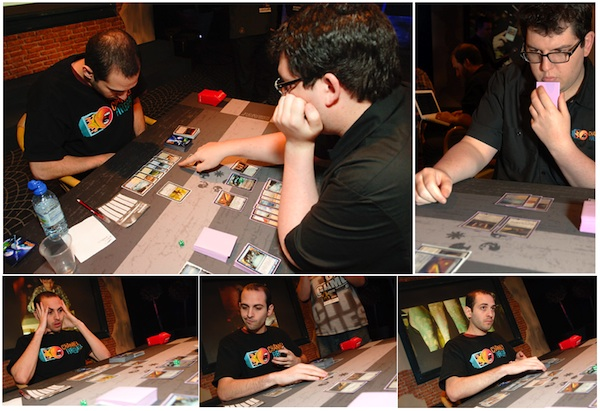
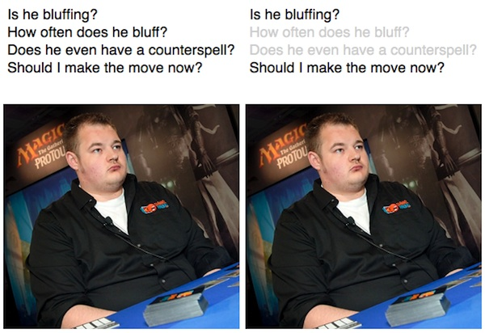
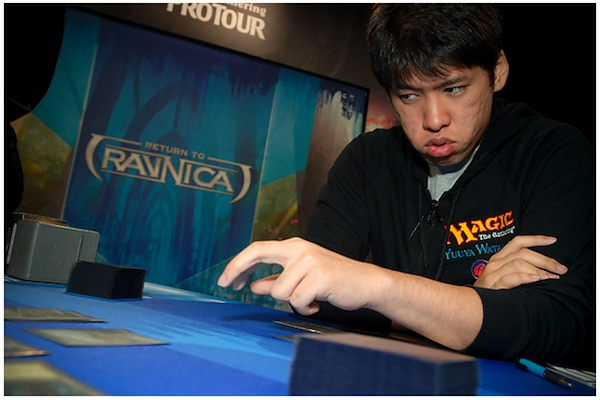
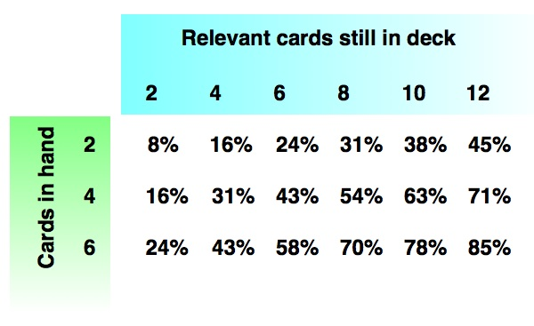
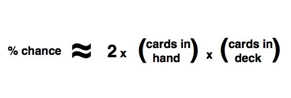
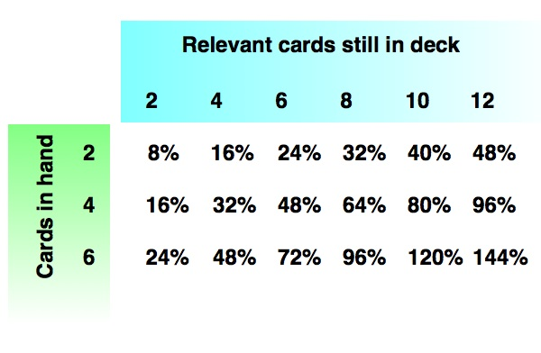
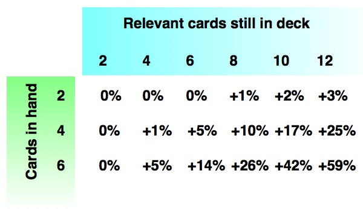
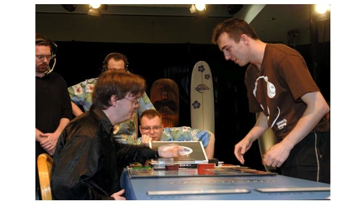
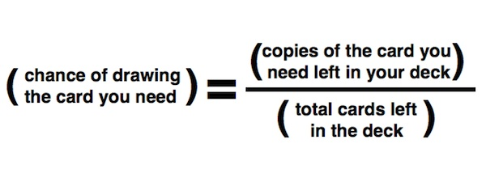
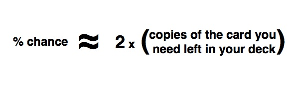

作者：Alexander Shearer
译者：旅法师营地 Black_lizard
原文地址：https://www.channelfireball.com/all-strategy/home/in-development-do-math-play-better/

长久以来，如何使用反击咒语一直困扰着我。
似乎我的对手总是手上有康，或者只是我总是无法确定他们特么的到底有没有康在手上。过了一阵子之后，我开始因为担心被康而不敢下东西，这可不是一个高玩应该有的故事。
我记得我第一次冷静下来开始计算而不是让过我的回合，是在一场七年前的扩充赛制PTQ上，我的对手使用的是某种沾蓝控，我必须决定是否这回合拍出我的大炸弹，还是让过这回合。如果他现在有反击咒语，那我就糟了，但如果我让过到他——那岂不是多给他一个回合抓到康？
于是我数了数他已经用过的康，大概估计了一下他还剩几个康在他的套牌里，经过一个快速的计算，得出的结果是，他手上没有康！太好了，于是我拍出了我的炸弹，他尝试性的假装他手上有康（译者注：付费，或者紧锁眉头似乎苦苦斟酌…我通常是这么干的。。），然后我来了句：“别装了亲。。”
他没有康。
所以今天，我想来说一说良好的计算会帮助你打得更好，并且告诉你两个小技巧来解决一些关键时刻的决策。
我们为什么要计算？
如果我们在比赛中进行过一些计算，我们将会得到很多优势。它帮助我们做出数字角度最优的决策，减少我们阅读场面上的障碍，减少倾向性，并且可以更好的预判对手。
只出最逻辑的牌
如果你想象一个对手刚打完一盘，并且从未唬过你，你可以发现有很多场面存在策略上的最佳方案。
比如说，想象一个对手从没在是否有康上唬过你，但是总是能在你出一个咒语时康你，如果你能计算出他手中还有康的概率，你就知道你是否要拍你的大炸弹了。
如果这种情况真实发生了，那么如何做决定就非常轻松加淡定了。可是，大多数时候，你的对手也会做出逻辑的出牌，所以是否他手上有康就成了分析的关键了。
减少判断障碍

人类通常都有有限的判断能力。如果你在想你是否锁了你的车门，那你脑子里的一部分就在帮你干这个而没有去想是不是该所有生物all in干一票。（译者注：一心无法两用的意思）
在知道对手手上有某张卡的可能性，或者神掏那张卡的几率后，就意味着你不必花时间去纠结是否他的关键张就要出现了，再进一步说，你就能更专注于你对手如何打牌的。
你的对手常唬人吗？通常如果你知道你的对手手上有那张卡的概率，这点很容易做到。
基本上，计算这种概率帮助你对你对手正在干的事情有一个基础的认识，使得你可以更专注于比赛而不是去胡乱猜测。
避免心态失衡
获知这种数字真的能避免心态失衡的情况。
我之前就写过一篇关于这个文章，文章的基本意思就是：
弄明白某个场面的发生事实上是在帮你，而不是让你一蹶不振。
当Gab Nassif在京都PT上神掏了Cruel Ultimatum （残酷通牒）然后逆转比赛击败Matteo Orsini-Jones时，那种感觉真的特别糟糕，尤其是在享有了那么久优势的情况下。事实上，Nassif只有4.3%的概率神掏残酷通牒，算上其它各种情况的概率的话，他获胜的几率大概只有1/20，这还是他已经受了足够幸运女神加持的情况下的概率，几乎是上帝的安排一般。
根据我的经验，牌手们当估计对手只有——比如说20-25%的几率神掏翻盘的时候，他们通常会发生倾向性，觉得对手没这么“狗运”。所以说如果你经过简单的计算，判断出对手握有那张牌的概率只有25%的时候，就别太担心你是那个倒霉的主，安心的该怎么出怎么出吧！如果你真的这么背，该你输的局就得输。
他们抓着它了吗？

今天首先获利于计算的两种情况之一就是你的对手是否已经抓着它了。
也就是说，他们是不是已经握着那张该死的牌，比如说康，去除或者别的什么大杀器可以彻底摧毁你的出牌计划。
核心问题——赌一把，还是求稳
我们为什么想知道这个完全是因为我们想决定是不是应该使出我们想使的牌，然后干对手一票。
这意味着也许我们正在耍一套组合技套牌，并且需要决定是不是应该这回合就火力全开打出组合，还是应该等自己更确定能使出来的时候再说。这可能是我们是否要花光所有法术力释放破邪天使 苟住对手的快攻，但如果他们有去除，就是我们的末日了。又或者，我们正决定是否要释放一个试探性的咒语来慢慢赢得比赛，还是这回合直接拍出我们手上的大炸弹直接把对手轰到火星。
我们要如何做出选择部分层面上取决于我们对手拥有对策的可能性（这回合或者到他的回合），可能是一张康，一张去除，干扰咒语或者任何可能捣毁我们神圣的致胜计划的牌。
这个问题背后的数学计算
如果你在比赛中遇到过上文所说的诸多情况之一，那么我们之前解决这种数学问题的文章是：超几何分布。
文中讲的是策略上如何计算出你在有限的机会中拿到你想要的关键张的概率和机会。
比如说，起手的七张。
虽然我们的问题是“他们抓到它了吗？”，基于我们无可获知对手的手牌，所以实际上我们的问题是“他们抓到它的概率有多大？”要回答这个，我们需要知道对手套牌里还剩多少张相关的牌，牌库里还剩多少张牌，收牌有多少。当你能获知这些情报的时候，你就有机会获得一个类似这样的“先知表格”：

为了更有说服力，这张表格的手牌数取了2张以上。
顶部的数字是指套牌中相关牌剩余的数量。相关牌就是指那些能捣毁你计划的该死的牌。最经典的例子可能就是康。好吧，我们假设这个数字就是他们套牌中，康还剩余的数量，这基于你对他们牌表的认识（你通常可以已最近大奖赛中这个色组的套牌为模板来猜测），这能让你对他们康的数量有一个基本估算，去掉他们这局游戏里已经使过的康，就是剩余的数量了。
左侧的数字是他们手牌的数量，这是说就是现在这个回合，不管是他回合还是你回合。
所以，假如说你的对手现在有4张手牌，你估计他套牌总共有6张康，并且他已经用了2张，那么你可以在顶部数字中圈一个4，然后再在左侧数字圈上4，这样，他现在手牌中有康的概率是31%。
当然，这个表格不能基于他们牌库里还有多少张牌来回答你，因为我们基于的是开局到中期时抓牌造成的情况。
最好估算的捷径
你不可能真的在赛场上用这个理论像计算机一样精确的去结算出这个数字
但是可喜的是，有一个妙招来帮你解决一个问题“我该出这个吗？”
这个捷径就是：

换一句话说，我们之前说的百分比约等于对手套牌中相关牌剩余的总数乘以他们的手牌数再乘以2.
因为这个小妙招是基于一个特定的套牌总数—也就是说，是基于现在构筑套牌中从开局到中期可能发生的普遍情况（译者注：遇到诸如掘坟，磨自己牌库然后心灵漩涡这种套牌，估计算不太准。）—你无须知道对手还剩多少张牌在牌库中。
你只需要知道对手手牌，以及对手还有多少张相关牌剩余就行了！是不是很牛掰？！
举例来说，如果你在思考是否应该释放关键张，而你的对手又4张手牌，你估计对手还有6张康在套牌里，那么他们手上现在就有康的概率大概就为：
4 x 6 x 2 = 48%
局限性

你可能已经注意到，这个48%比我之前的表格中列举的计算公式计算出的45%要高一些，事实上，就像所有妙招一样，它总会有一些出入：
手牌越多，相关牌剩余越多，则刚刚说的小妙招的估计值就会过高，有多高呢？下面是结果：

有的似乎已经高的离谱了是不是，但他们其实已经无关精要了，因为你的对手有关键张的概率早已经过了50%。
换句话说，这些过高的例子里，你都可以丢硬币来判断对手又还是没有相关牌了……
基于此，我觉得这个小妙招真的可以帮你在面对有康套牌时候进行判断，如果你的估算是16%，那就无妨了，你5/6的概率不会被康，还想什么呢，该拍啥拍啥吧！

我们会抓到它吗？
另一个我们周而复始的会在比赛中关心的关于概率的问题是：“我会抓到它吗？”
这个问题其实也是“对手会抓到它吗？”的衍生，因为当我们讨论神掏的时候，我们通常是关心我们自己的神掏以及对手的。我们应该提防对手下回合神掏去除，还是我们可以无视这种可能性而展开我们的牛掰组合技？我们要神掏一张烧结束战斗，还是歇菜？
之前说的基础的计算很简单，但是事实上再比赛中很多时候是有误差的——这也是为什么第二条妙招显得这么恰到好处。
神掏背后的数学真理

其实，算神掏的概率比算手牌简单不少，它的计算公式如下：
是啊，这就是相关张在套牌里剩余的数了哥们，它取决于你还有多少张牌在牌库里。
这个计算太简单了，但是当我们在全身心的比赛的时候，这个计算还太慢了不是么。
估算神掏的捷径
为了使用本碉堡妙招，你只需知道你想要神掏的牌剩余的数量就行了。
这就是我提供的另一个计算公式：

对，你不用客气，就这么简单。
举例来说，你在使一套烧脸套牌，任何一张烧3咒语都能帮你赢得比赛，你知道你还有7张烧3在你的套牌里。
7 x 2 = 14%
这就是你神掏它们中任何一张的概率。
使用这条妙招时，我们不需要去管什么牌库还剩几张牌因为大多数情况下，牌库数量对这个概率的影响远远小于关键张剩余数量，总的来说，就算对牌库压缩的凶一点——比方说，现在是第4,5,7还是第9回合，对这个公式都不会有太大影响。
不错的数据就够了
这些我说的妙招的意义是为了给我们足够的信息来帮助我们做决策，特别是在比赛中当我们面对要去场面评估，绞尽脑汁去计算那些乘除（甚至有时是阶乘！）的时候。在我这里说的情况下，一个靠谱的估算能在我们漫长比赛中帮我们做出更好的判断，无论是在提供信息角度还是让我们有更多的脑细胞去思考比赛本身而不是去做数学题。
你有什么你喜欢的小妙招，估算方法或者工具来帮助里清空你脑子里的内存，让你马力全开的打比赛吗？